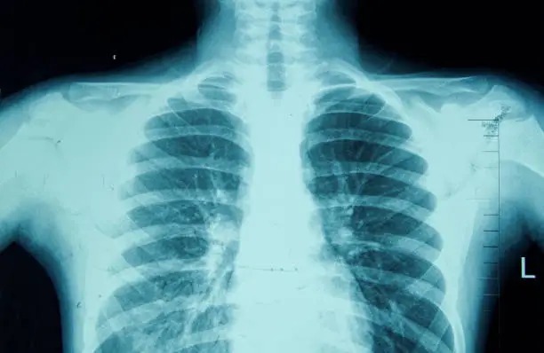

Serviços

Radiologia Convencional
Exames realizados com tecnologia Computed Radiography (CR), garantindo qualidade e agilidade no diagnóstico.

Mamografia Digital
Equipamentos modernos para a detecção precoce de alterações nas mamas com conforto e segurança.

Exames Contrastados
Procedimentos com e sem contraste realizados por profissionais especializados para melhor visualização dos órgãos.